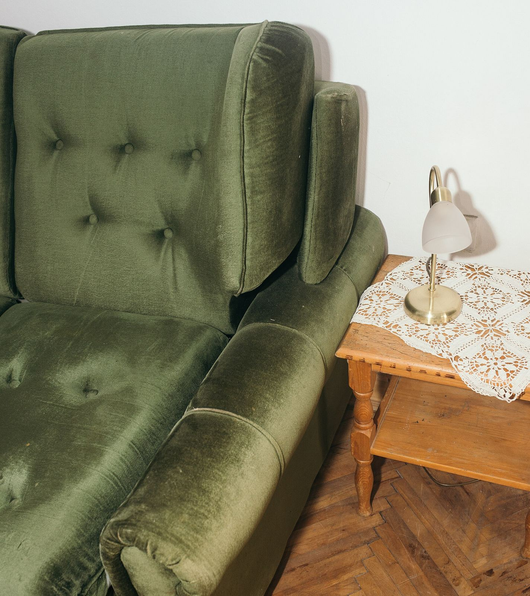
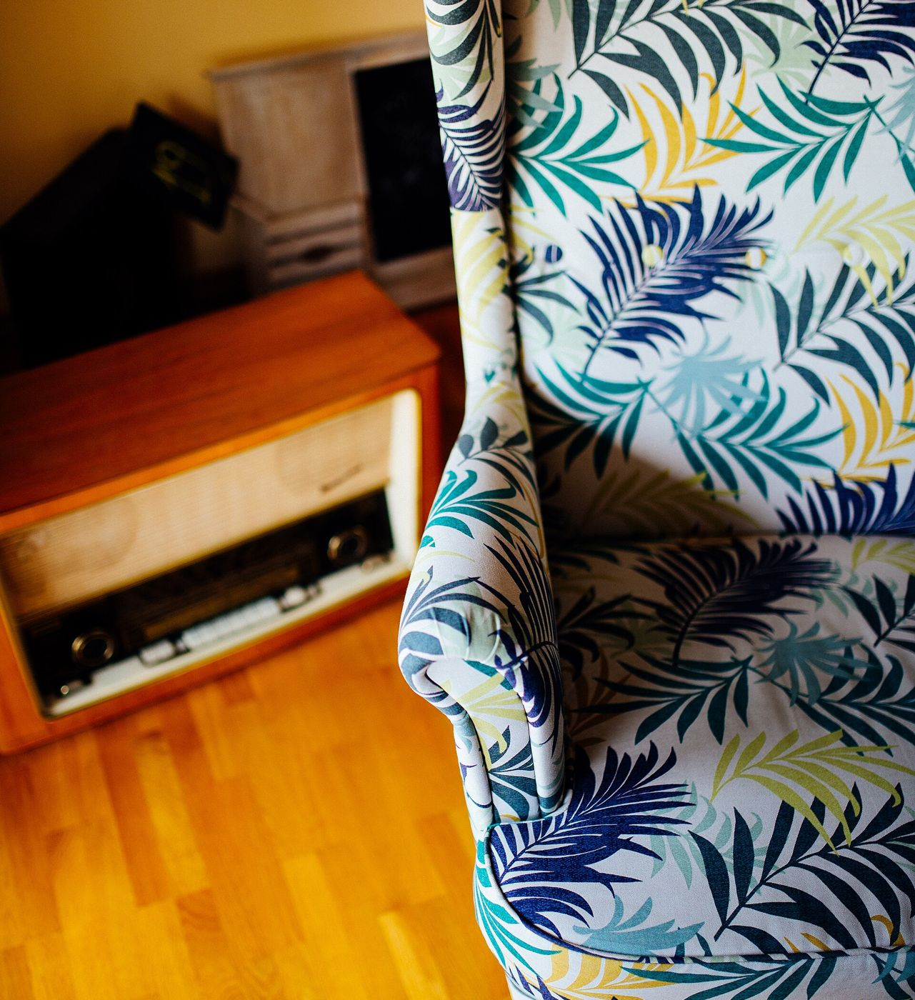
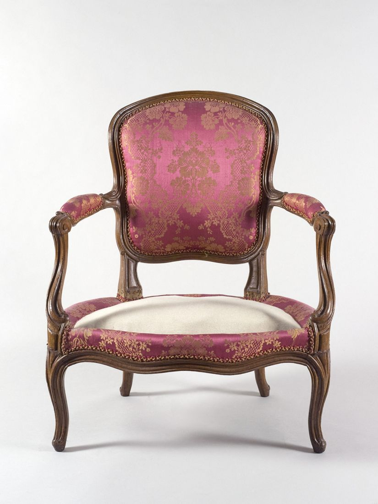
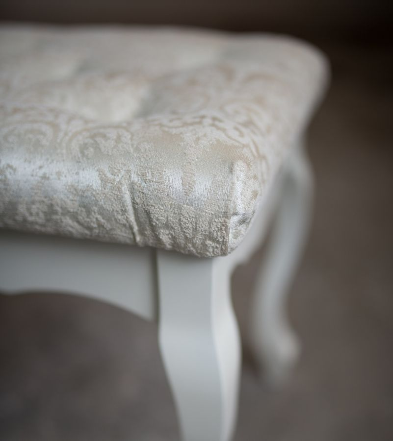
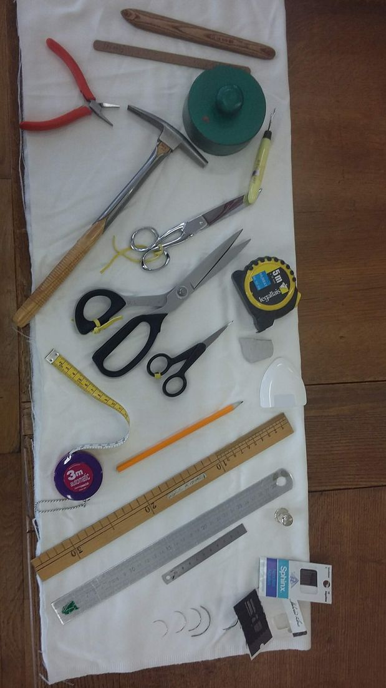

Fauteuils, chaises, coussins, vêtements : Virginie leur redonne vie. Envoyez une photo, elle passe chez vous avec ses tissus.
Plus besoin de rappeler trois fois : la demande arrive complète, avec les photos, et le rendez-vous se cale tout seul.
Fauteuil, chaises, coussins, voilages ou vêtement : vous dites ce que vous aimeriez (nouveau tissu, garnissage, transformation…). La demande arrive triée, prête à être étudiée.
Choisissez un créneau : elle vient voir votre déco et vous aide à choisir le tissu sur place.
Chaque pièce est unique. Quelques projets récents de l'atelier, comme sur la page Facebook.

Ancien revêtement remplacé par un tissu Casal résistant et facile à entretenir. Du peps pour l'espace repas.

Confection de voilages pour un salon et une chambre, avec une cantonnière qui cache le coffre du store.

Tout est sur mesure : le prix se précise après la visite, selon la pièce et le tissu choisi.

« Je me déplace chez les clients. Cela me permet de voir la décoration et de m'adapter. »
Virginie Laudrin, CAP tapissier d'ameublement et CAP couture, a ouvert son atelier à Bain-de-Bretagne en avril 2026. Elle se déplace aussi pour les personnes qui ne peuvent pas venir jusqu'à l'atelier.